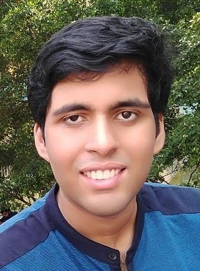

Pratyush Dasdas160@purdue.edu
I am a PhD student in CS at Purdue University, studying compilers, co-advised by Professors Milind Kulkarni and Tiark Rompf. I will be interning on the SwiftUI team at Apple in Summer, 2023. As an undergrad, I mainly worked with Jim Pivarski on software for High Energy Physics. During this period, I was a core developer of two software projects that found significant adoption in the Physics community - Awkward Array, a library for irregularly shaped tensor computations, and uproot, a python re-implementation of I/O for Physics data motivated by interoperability with other existing Python packages. I have also made significant contributions to the following LLVM based projects - Enzyme, Cling and Clang. My CV can be found here. |
 |
Specializing Data Access in a Distributed File System
, Anxhelo Xhebraj, Supun Abeysinghe, Patrick Lafontaine, and Tiark Rompf
DiSh: Dynamic Shell-Script Distribution
Tammam Mustafa, Konstantinos Kallas, , and Nikos Vasilakis
20th USENIX Symposium on Networked Systems Design and Implementation (NSDI, 2023)
AwkwardForth: accelerating Uproot with an internal DSL
Jim Pivarski, Ianna Osborne, , David Lange, and Peter Elmer
25th International Conference on Computing in High-Energy and Nuclear Physics (vCHEP, 2021)
Awkward Array: JSON-like data, NumPy-like idioms
Jim Pivarski, Ianna Osborne, , Anish Biswas, and Peter Elmer
19th Python in Science Conference (SciPy USA, 2020)
The Scikit HEP Project overview and prospects
Eduardo Rodrigues, Benjamin Krikler, Chris Burr, Dmitri Smirnov, Hans Dembinski, Henry Schreiner, Jaydeep Nandi, Jim Pivarski, Matthew Feickert, Matthieu Marinangeli, Nick Smith, and
24th International Conference on Computing in High-Energy and Nuclear Physics (CHEP 2019)
GSoC Experience - Enzyme (LLVM Developers' Meeting, 2021)
Python in High Energy Physics (PyCon USA, 2020)
Language Transformations for the Awkward Array library (IRIS-HEP Fellow Presentations, 2020)
CUDA backend for the Awkward Array project (Princeton University Liberty Research Group, 2020)
Python in High Energy Physics (SciPy India, 2019)
Writing files with uproot (PyHEP, 2019)
Writing TTrees with uproot (IRIS-HEP: Summer student project presentations, 2019)
Writing files with uproot (ROOT Users' Workshop, 2018)
Writing files with uproot (DIANA-HEP: Updates on ROOT I/O, 2018)
Separation of Concerns - ROOT4J and Spark-Root (CMS Big Data Science Meeting, 2017)